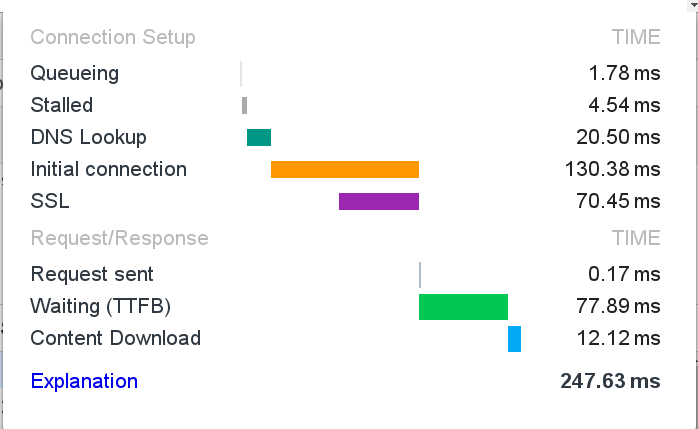
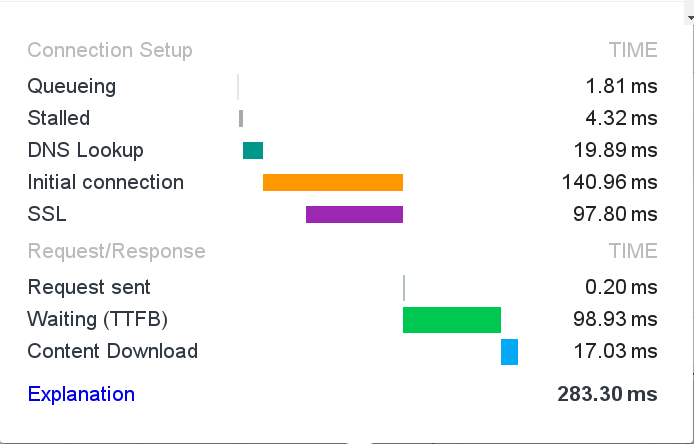
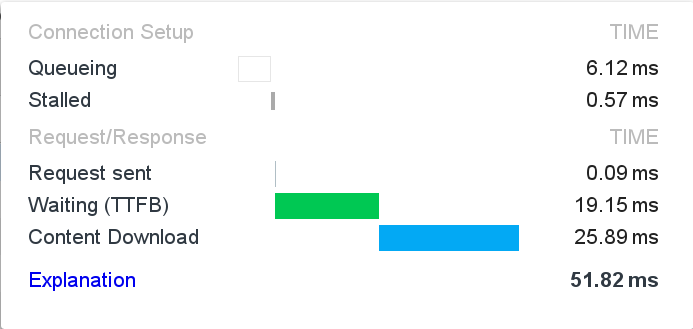
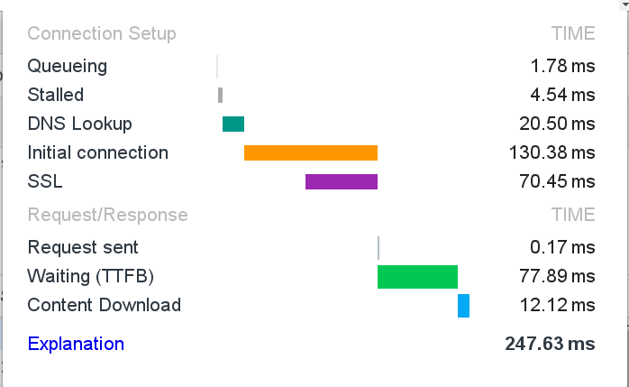
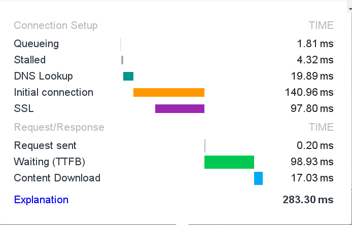
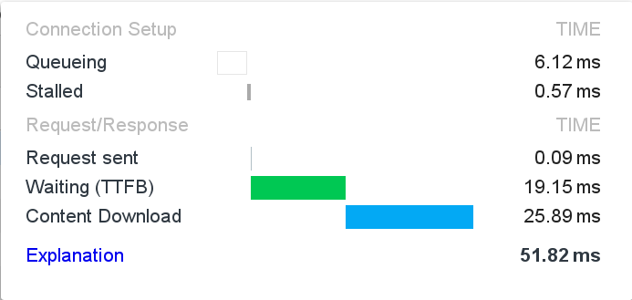

Faze učitavanja za bootstrap css fajl
Faze učitavanja za jquery fajl
Faze učitavanja eksterne slike
Eksterna slika

Primetimo kako za eksternu sliku nema čekanja na SSL, pošto se ne učitava preko https-a
Faze učitavanja za bootstrap css fajl
Faze učitavanja za jquery fajl
Faze učitavanja eksterne slike
Eksterna slika
Primetimo kako za eksternu sliku nema čekanja na SSL, pošto se ne učitava preko https-a
GET /bootstrap/3.3.6/css/bootstrap.min.css HTTP/1.1 Host: maxcdn.bootstrapcdn.com Connection: keep-alive Accept: text/css,*/*;q=0.1 User-Agent: Mozilla/5.0 (X11; Linux x86_64) AppleWebKit/537.36 (KHTML, like Gecko) Chrome/49.0.2623.87 Safari/537.36 Accept-Encoding: gzip, deflate, sdch Accept-Language: en-US,en;q=0.8,hr;q=0.6,ja;q=0.4,sr;q=0.2
HTTP/1.1 200 OK Date: Sat, 19 Mar 2016 14:40:22 GMT Content-Type: text/css Transfer-Encoding: chunked Connection: keep-alive Last-Modified: Tue, 24 Nov 2015 19:49:46 GMT ETag: W/"2f624089c65f12185e79925bc5a7fc42" Server: NetDNA-cache/2.2 Expires: Tue, 14 Mar 2017 14:40:22 GMT Cache-Control: max-age=31104000 Vary: Accept-EncodingAccess-Control-Allow-Origin: *
X-Hello-Human: You should work for us! Email: jdorfman+theheader@maxcdn.com or @MaxCDNDeveloper on Twitter X-Cache: HIT Content-Encoding: gzip
GET /i/pix/2016/01/11/10/2FEB003300000578-3393660-image-a-1_1452509019365.jpg HTTP/1.1 Host: i.dailymail.co.uk Connection: keep-alive Cache-Control: max-age=0 Accept: image/webp,image/*,*/*;q=0.8 User-Agent: Mozilla/5.0 (X11; Linux x86_64) AppleWebKit/537.36 (KHTML, like Gecko) Chrome/49.0.2623.87 Safari/537.36 Accept-Encoding: gzip, deflate, sdch Accept-Language: en-US,en;q=0.8,hr;q=0.6,ja;q=0.4,sr;q=0.2
HTTP/1.1 200 OK Server: Apache ETag: "8a8d7e39863ada67743107516e59eeef:1452509021" Last-Modified: Mon, 11 Jan 2016 10:43:41 GMT Accept-Ranges: bytes Content-Length: 45832 Content-Type: image/jpeg Cache-Control: max-age=2592000 Expires: Mon, 18 Apr 2016 15:39:18 GMT Date: Sat, 19 Mar 2016 15:39:18 GMT Connection: keep-alive
GET /jquery-2.2.1.min.js HTTP/1.1 Host: code.jquery.com Connection: keep-alive Accept: */* User-Agent: Mozilla/5.0 (X11; Linux x86_64) AppleWebKit/537.36 (KHTML, like Gecko) Chrome/49.0.2623.87 Safari/537.36 Accept-Encoding: gzip, deflate, sdch Accept-Language: en-US,en;q=0.8,hr;q=0.6,ja;q=0.4,sr;q=0.2 If-None-Match: "56cb5d7c-14e7e" If-Modified-Since: Mon, 22 Feb 2016 19:11:56 GMT
HTTP/1.1 200 OK Date: Sat, 19 Mar 2016 14:39:36 GMT Last-Modified: Mon, 22 Feb 2016 19:11:56 GMT Vary: Accept-Encoding ETag: "56cb5d7c-14e7e" Expires: Thu, 31 Dec 2037 23:55:55 GMT Cache-Control: max-age=315360000, publicAccess-Control-Allow-Origin: *
Server: NetDNA-cache/2.2 Content-Type: application/javascript; charset=utf-8 Content-Encoding: gzip X-Cache: HIT Content-Length: 34929 Connection: keep-alive Accept-Ranges: bytes
Response headeri će se pojaviti ovdeUnesi URL fajla ovde:
Napomena: Pošto se fajlovi dohvataju preko AJAX poziva koji u stvari koristi
XMLHttpRequest objekat, a kojim se samo može slati zahtev ka stranicama koje
su na istom domenu kao stranica koja šalje zahtev, nismo u mogućnosti da
dohvatimo većinu fajlova. Možemo dohvatiti recimo jquery skript kao i
bootstrap css fajl koje je ova stranica učitala; primetimo liniju obojenu
u crveno u njihovom response headeru. Kao rezultat dobićemo samo simple headere.
Cross-origin resource sharing
Još na temu ovoga
ovde
i ovde